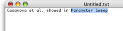
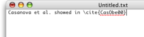

System Service System Service
System Service System ServiceIf you can't use the autocompletion plugin because your favorite text editor is not compatible (for instance BBEdit or TextWrangler), you will be able to use the installed OS X System Services to do much of the same thing.
The services also perform some searching functionality which can help if you don't have a photographic memory of citation keys.
In any Services aware app (including: TeXShop, iTeXMac, TextEdit, BBEdit, and TextWrangler, but no Classic or X11 apps) type a string, select it, then choose "Complete Citation" from the BibDesk submenu of the Services Menu. This will replace the selected string with the citation(s) of any entries in open BibDesk documents (or, if BibDesk is not open yet, in the default bibliography set in General Preferences) whose titles contain that string. So:

becomes:

You can search more than just the title from the service. Both of the next two examples search for the string "foo" in the title:
"foo" |
"Title = foo" |
The next example searches for a publication with "Baz" in the author, "foo" in the title, and "Jan" in the month:
"Author = Baz & Title = foo & Month = Jan" |
The "Complete Citation" service uses a template for the actual output. If you want to use a different style, you can modify the templates. See the Template Preferences to learn how to change the template file to use and Templates on how to write templates.
There are two other services available that can insert a more extensive bibliography description for the items. They work basically the same as the "Complete Citation" service. Choose the "Complete Text Bibliography" service menu item to get the bibliography as plain text. If you choose the "Complete Rich Text Bibliography", you wil get the biblography as formatted text (RTF). Both these commands also use templates.
Another service is available, called "Complete Cite Key" which allows you to highlight a part of a citation key and BibDesk will complete the key for you. For instance, in our example , selecting "CasO" and invoking the "Complete Cite Key" service would insert "CasObe00".